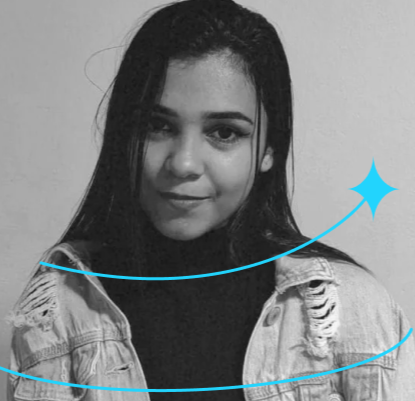

Construindo interfaces com
Lógica e Propósito
Olá, eu sou Marcelly. Movida pela curiosidade de entender o usuário, utilizo minha base em organização e noções de prototipagem para desenvolver aplicações web funcionais, responsivas e focadas em resolver problemas reais.
// Minha Trajetória
Minha jornada na tecnologia começou no Instituto Federal do Ceará (IFCE), onde cursei os três primeiros semestres de ADS e construí uma base sólida em lógica. Atualmente, sigo minha graduação pela Uniasselvi, com foco prático no Desenvolvimento Web. Minha experiência anterior como aprendiz administrativa me ensinou a organizar processos e entender as necessidades diárias de uma equipe, habilidades que hoje aplico na estruturação de interfaces e na escrita de código claro e eficiente.
// meu perfil
Visão Prática
Foco em entender a real necessidade do usuário e da equipe antes de escrever qualquer linha de código ou desenhar uma tela.
Organização
Trago a forte base administrativa para a tecnologia. Mantenho documentações, fluxos e processos estruturados para facilitar o trabalho em equipe.
Iniciativa
Se vejo uma lacuna ou um problema no sistema, busco ativamente ferramentas e formas de propor melhorias, unindo o design à utilidade real.
// Minhas Tecnologias
// Projetos
Case: Sistema de Digitalização
Projeto interno corporativo. Criação de wireframes e mapeamento de fluxo para adição de novas ferramentas e melhoria da usabilidade do sistema utilizado pela equipe.
Ver DetalhesOne Piece Page
Página interativa com foco em manipulação do DOM e lógica de seleção utilizando JavaScript puro.
Acessar Projeto